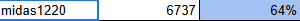
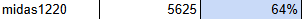

Why I Built Study’nco


Looks like I don’t need to explain much. I built Study’nco because I know there are a lot of people like me. Sometimes studying solo just isn’t enough and you might wanna drill stuff with a quiz. I made this to make learning easier for us. Let’s get smarter about Inco together.